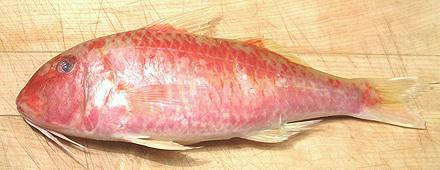

Cinnabar Goatfish

[Cá Phèn Râu (Viet); Parupeneus heptacanthus]
This tropical Indo/Pacific Goatfish is found from the east coast of Africa across the Pacific to the west coast of Mexico and South America. Some are as far south as the south coast of Australia and the tip of Africa. It adopts a number of color schemes but is often marketed in its red form, which can be quite blotchy. Note that the barbels responsible for the name "goatfish" can be tucked in and may not be visible. These fish can grow to nearly 14 inches but the photo specimen was 10-3/4 inches long weighing 1l ounces. Red list status: Not Evaluated. Photo © cg1.
More on Goatfish.
Cinnabar Goatfish is a superb eating fish with but not common here in Southern California. The flesh is mild, firm and white, suitable for most method of cooking. Its unique flavor is most enjoyable poached, but it is also very fine pan fried with just a dusting of rice flour. It is firm enough to use for soups, but breaks up easily into large flakes on the plate.
Buying: I have yet to find this fish on ice in the Asian fish markets here in Los Angeles, but I have found bags of frozen fish in the freezer cases of one large market. An excellent substitute is the Indian Goatfish, usually sold as "Red Mullet".
Scales: This fish is covered with very large but rather thin scales that scrape off quite easily with very little flying around. Some may simply fold over, but are easy to pull off with your fingers. The main problem is they are very transparent and making sure you've rinsed them all off the fish is not easy.
Cleaning: This fish has a small body cavity and is easy to clean, but the throat is so strong you'll have to cut it with shears. The gills pull out fairly easily.
Fillets: This is an easy fish to fillet but the short rib cage is difficult to follow. When you get to the rib cage just use your kitchen shears to cut the ribs from the backbone and use long nose pliers to pull them from the fillet. There are also many very significant centerline spines which need to be pulled for the front half of the fillet. Pull forward with long nose pliers.
Yield: Fillet yield is moderate due to the fish's large head, an 11 ounce fish yielded 5-3/8 ounces skin-on fillet (49%) and 4-7/8 ounces of skinless fillet (44%).
Skin: The skin of this fish does not have a strong or "off" flavor but it does shrink quite a bit when cooking so is better removed. This is a very difficult fish to skin because the skin is so thin and fragile. You have to hold the long knife at as shallow an angle as you can without taking flesh, and you'll still probably end up with fairly large fragments of skin remaining. Don't worry about it if you got most of it. If you have a big patch, you may be able to get under the transparent outer membrane and pull it off - that's the part that shrinks, not the color layer under it.
Cooking: I don't recommend cooking this fish whole, because the many large centerline spines, other small bones associated with the fins, skin shrink and difficulty making sure all the transparent scales have been removed. These factors make it difficult to deal with at the table. Fillets are easily made bone and scale free. Skinless fillets poach very nicely and pan fry even better. Just dust lightly with rice flour and fry in pure olive oil.
Stock: The head fins and bones make a light flavorful stock with very little oil, one of the finest and most usable fish stocks you can have.
sf_goatcbz 110305 - www.clovegarden.com